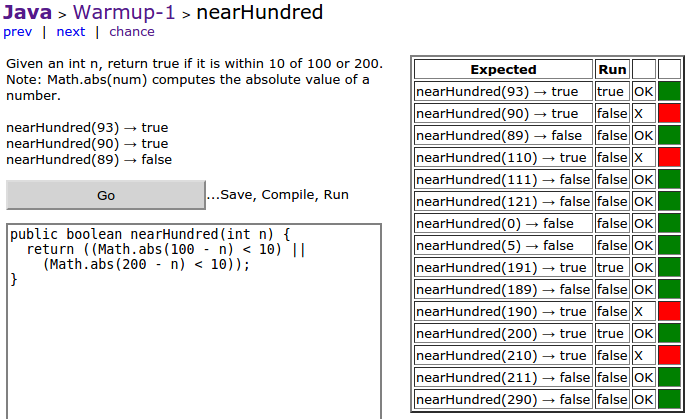

James Madison University, Spring 2018 Semester
Lab09: CodingBat practice problems

Background
CodingBat is a free site of live problems to build skill in Java and/or Python. It was created by Nick Parlante, who is Computer Science lecturer at Stanford. The name "CodingBat" was based on the Greek word "bat" meaning "this domain was available" (or so they say).Part 1: Account Setup
-
Go to codingbat.com and create an account (click the link on the upper right).
Please use your JMU email when setting up your account. -
After logging in, click the "prefs" link (upper right) and "share to" your instructor's email (mayfiecs@jmu.edu or weikleda@jmu.edu) so you will get credit.
Also make sure your name is entered as shown: Last, First
Part 2: Problem Solving
Work through several of the Warmup-1 problems. All of them have solutions available; try to solve them first before looking at the answer.
Some of the warm up problems will require you to use String methods like
charAt,equals,length, andsubstring. Don't worry about any problems that requireforloops; we'll get to that next week.Solve as many of the
 Logic-1 problems as you can today. At a minimum, solve the following:
squirrelPlay,
answerCell,
caughtSpeeding,
withoutDoubles,
and shareDigit.
You might find (on CodingBat's site) the Boolean Logic
Logic-1 problems as you can today. At a minimum, solve the following:
squirrelPlay,
answerCell,
caughtSpeeding,
withoutDoubles,
and shareDigit.
You might find (on CodingBat's site) the Boolean Logic  video 1 and video 2 useful.
video 1 and video 2 useful.
You don't need to turn in anything via Canvas today. We will grade your progress directly from CodingBat, and we will use CodingBat in subsequent labs. You are encouraged to work on CodingBat problems at any time.